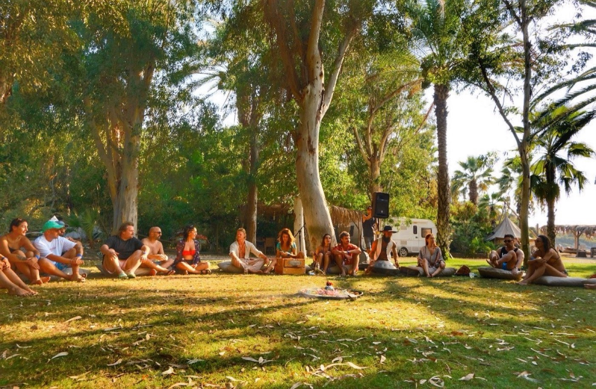
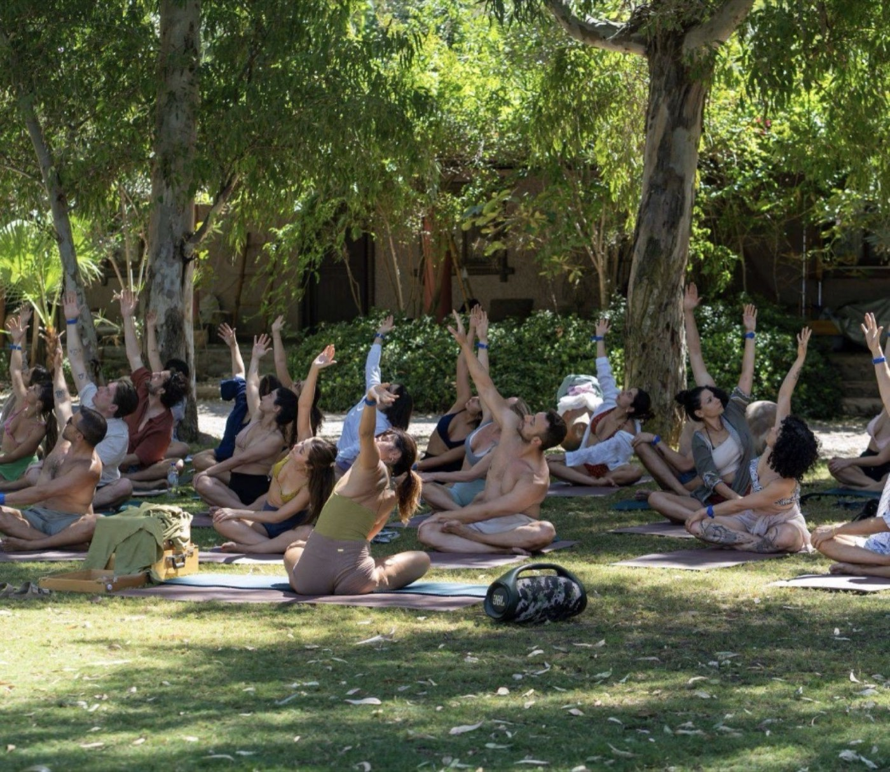

Liminal Village
Lived regeneration across Self, Soil & Soul.
An eco-tech regenerative hub in Italy
Liminal Village is a co-living and co-creation hub in the Tronto Valley, in Italy's Marche region.
Its work blends biomimicry, permaculture and open-source design. The village hosts gatherings, workshops, hackathons, festivals, retreats and volunteer stays, and is part of a wider network of regenerative communities.

Embodiment, voice and inner coherence as the ground of change.
Land, ecology and the daily practice of living well together.
Ceremony, sacred sound and devotion woven into community life.
Stewarding the village
As steward, I help hold the culture of the village: rooted in care, trust and coherence.
The village is home to a family from the Marche region, the founders of this regenerative co-living hub. With them I host the Mama Italy retreat, where guests live the rhythms of the village through ritual, Bhakti, shared meals, food from the land and seva, selfless service to the community.

Come and live it
Join a gathering, a retreat or a volunteer stay at the village.